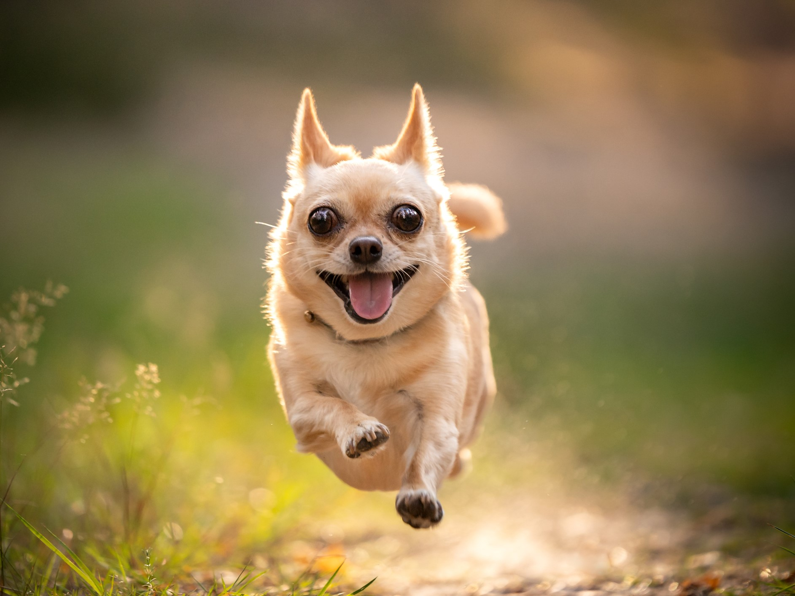

A kutyák, a latin nevükön Canis lupus familiaris, az ember egyik legősibb és leghűségesebb társai, akik a farkasok háziasításából származnak, több tízezer évvel ezelőtt. Azóta az ember mellett élnek, és számos feladatban segítettek: a vadászatban, a ház őrzésében, a nyájterelésben, sőt, később társállatként is komoly szerepet kaptak. A kutyák rengeteg különböző fajtában és méretben fordulnak elő, ami lehetővé teszi, hogy különféle életmódokhoz és igényekhez igazodjanak.
